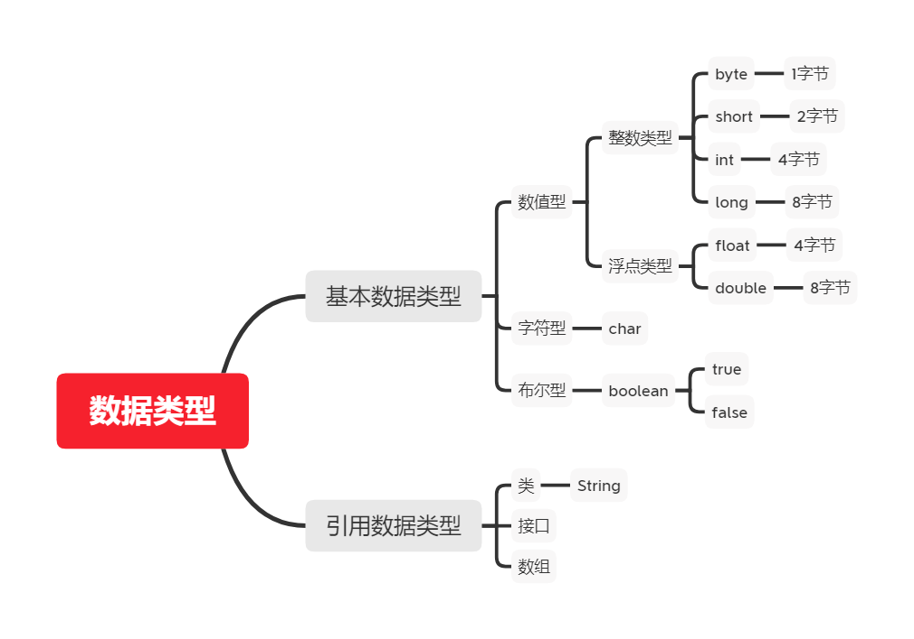
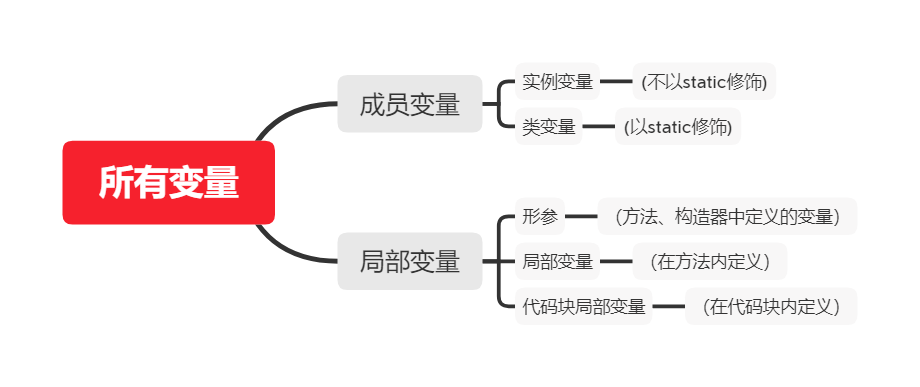
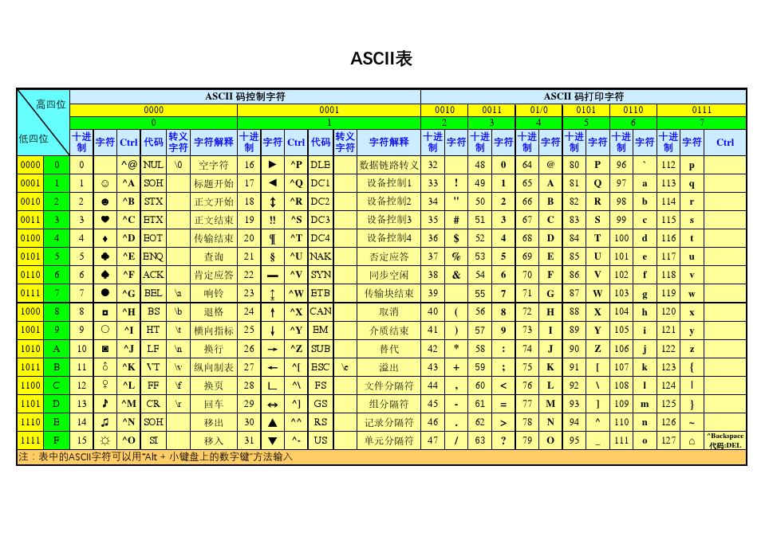
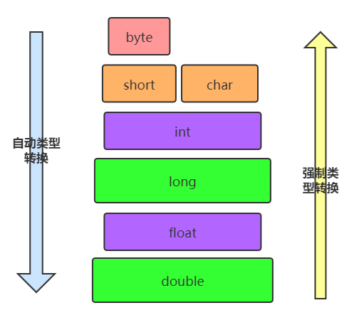

4. 变量¶
4.1. 变量¶
4.1.1. 变量的概念：¶
内存中的一个存储区域
该区域的数据可以在同一类型范围内不断变化
变量是程序中最基本的存储单元。包含变量类型、变量名和存储的值
4.1.2. 变量的作用：¶
用于在内存中保存数据
使用变量注意：
Java中每个变量必须先声明，后使用
使用变量名来访问这块区域的数据
4.1.3. 变量的作用域：其定义所在的一对{ }内¶
变量只有在其作用域内才有效
同一个作用域内，不能定义重名的变量
4.1.4. 声明变量¶
语法：<数据类型> <变量名称>
例如：int var;
4.1.5. 变量的赋值¶
语法：<变量名称> = <值>
例如：var = 10;
4.1.7. 变量的注意事项：¶
变量不能重复定义。
整数默认是int类型，如果想要直接定义一个long类型的数字，那么可以在这个数字后面加上l或者L，推荐L
小数默认是double类型，如果想要定义一个float类型的数字，那么可以在这个数字后面加上f或者F，推荐F
变量在使用前必须要赋值。
变量只在自己的作用域（大括号）内有效，变量一旦离开自己的作用域就会消失
4.1.8. 变量的分类¶
按数据类型分类
对于每一种数据都定义了明确的具体数据类型（强类型语言），在内存中分配了不同大小的内存空间。

按声明的位置的不同
在方法体外，类体内声明的变量称为成员变量。
在方法体内部声明的变量称为局部变量。

4.2. 整数类型¶
4.2.1. 整数类型：¶
byte、short、int(默认)、longjava各整数类型有固定的表数范围和字段长度，不受具体OS的影响，以保证java程序的可移植性。java的整型常量默认为int型，声明long型常量须后加l或Ljava程序中变量通常声明为int型，除非不足以表示较大的数，才使用long
4.2.2. 各类型对比¶
| 类型 | 占用存储空间 | 范围 |
|---|---|---|
byte |
1字节 = 8 (bit) | -128 ~ 127 |
short |
2字节 = 16(bit) | -32768~ 32767 |
int |
4字节 = 32(bit) | -2147483648~2147483647 |
long |
8字节 = 64(bit) | -9223372036854775808~9223372036854775807 |
注意:整数类型中 第一个bit 代表的是符号 其余的组合起来就是当前代表的2进制数字因此： byte 最大存储 0111 ，1111 最小存储 1111, 1111
因此当 byte n = 127; n++ ; 结果就变成了 -128
4.2.3. 例如：¶
public class Test {
public static void main(String[] args) {
byte maxByteValue = Byte.MAX_VALUE;
System.out.println(++maxByteValue );
}
}
// console: -127
4.3. 浮点类型¶
4.3.1. 浮点类型：¶
float:单精度，尾数可以精确到7位有效数字。很多情况下，精度很难满足需求。double:双精度，精度是float的两倍。通常采用此类型后面也可以加d通常不加。Java的浮点型常量默认为double型，声明float型常量，须后加f或Fjava中可以用_来三位三位输出。double otherNumber = 3_000_000.4_567_890;
| 类型 | 占用存储空间 | 范围 |
|---|---|---|
单精度float |
4字节 = 32(bit) | -3.403E38 ~ 3.403E38 |
双精度double |
8字节 = 64(bit) | -1.798E308 ~ 1.798E308 |
4.4. 字符类型：(char)¶
4.4.1. 字符类型¶
char 型数据用来表示通常意义上“字符”(2字节)
Java中的所有字符都使用Unicode编码，故一个字符可以存储一个字母，一个汉字，或其他书面语的一个字符。
字符型变量的三种表现形式：
字符常量是用单引号(‘ ’)括起来的单个字符。例如：
char c1 = 'a'; char c2 = '中'; char c3 = '9';Java中还允许使用转义字符‘\’来将其后的字符转变为特殊字符型常量。例如：char c3 = ‘\n’; // '\n'表示换行符直接使用
Unicode值来表示字符型常量：‘\uXXXX’。其中，XXXX代表一个十六进制整数。如：\u000a表示\n。
char类型是可以进行运算的。因为它都对应有Unicode码。
4.4.2. ASCII 码¶
上个世纪60年代，美国制定了一套字符编码，对英语字符与二进制位之间的关系，做了统一规定。这被称为ASCII码。ASCII码一共规定了128个字符的编码，比如空格“SPACE”是32（二进制00100000），大写的字母A是65（二进制01000001）。这128个符号（包括32个不能打印出来的控制符号），只占用了一个字节的后面7位，最前面的1位统一规定为0。
缺点：
不能表示所有字符。
相同的编码表示的字符不一样：比如，130在法语编码中代表了
é，在希伯来语编码中却代表了字母Gimel (ג)
ASCII编码表
4.4.3. Unicode 编码¶
Unicode：一种编码，将世界上所有的符号都纳入其中。每一个符号都给予一个独一无二的编码，使用 Unicode 没有乱码的问题。
缺点：
Unicode 只规定了符号的二进制代码，却没有规定这个二进制代码应该如何存储：无法区别 Unicode 和ASCII：计算机无法区分三个字节表示一个符号还是分别表示三个符号。另外，我们知道，英文字母只用一个字节表示就够了，如果unicode统一规定，每个符号用三个或四个字节表示，那么每个英文字母前都必然有二到三个字节是0，这对于存储空间来说是极大的浪费。
4.4.4. UTF-8¶
UTF-8是在互联网上使用最广的一种Unicode的实现方式。UTF-8是一种变长的编码方式。它可以使用 1-6 个字节表示一个符号，根据不同的符号而变化字节长度。UTF-8的编码规则：
对于单字节的UTF-8编码，该字节的最高位为0，其余7位用来对字符进行编码（等同于ASCII码）。
对于多字节的UTF-8编码，如果编码包含 n 个字节，那么第一个字节的前 n 位为1，第一个字节的第 n+1 位为0，该字节的剩余各位用来对字符进行编码。在第一个字节之后的所有的字节，都是最高两位为”10”，其余6位用来对字符进行编码
4.5. 布尔类型(Boolean)¶
4.5.1. 布尔类型¶
boolean类型用来判断逻辑条件，一般用于程序流程控制：if条件控制语句；while循环控制语句；do-while循环控制语句；for循环控制语句；
boolean类型数据只允许取值true和false，无null。不可以使用
0或非 0的整数替代false和true，这点和C语言,python语言不同。Java虚拟机中没有任何供
boolean值专用的字节码指令，Java语言表达所操作的boolean值，在编译之后都使用Jvm中的int数据类型来代替：true用1表示，false用0表示。
4.6. 类型转换¶
4.6.1. 类型转换问题¶
boolean类型不参与数据类型转换问题
自动类型转换：
容量小的类型自动转换为容量大的数据类型。
有多种类型的数据混合运算时，系统首先自动将所有数据转换成容量最大的那种数据类型，然后再进行计算。
byte,short,char之间不会相互转换，他们三者在计算时首先转换为int类型。
当把任何基本数据类型的值和字符串(String)进行连接运算时(+)，基本数据类型的值将自动转化为字符串(String)类型。
此时的容量大小指的是，表示数的范围的大和小。比如：float容量要大于long的容量
强制类型转换
自动类型转换的逆过程，将容量大的数据类型转换为容量小的数据类型。使用时要加上强制转换符：()，但可能造成精度降低或溢出,格外要注意。
通常，字符串不能直接转换为基本类型，但通过基本类型对应的包装类则可以实现把字符串转换成基本类型。
注意 :因为java程序默认整数位int 默认浮点数为double ，如果声明比默认小的类型变量进行+-运算 一定要(cast)强制转换一下